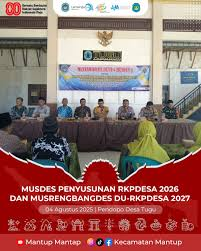
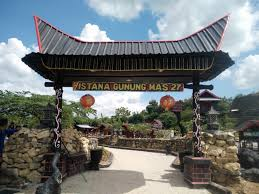
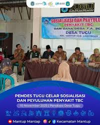

Kecamatan Mantup
Website Resmi Desa Tugu
Lihat ProfilDesa Tugu adalah salah satu desa yang memiliki potensi cukup baik, terutama di bidang pertanian dan juga pariwisata. Suasana desa yang masih asri dan masyarakat yang ramah membuat Desa Tugu menjadi tempat yang nyaman, baik untuk ditinggali maupun dikunjungi. Salah satu yang menjadi daya tarik adalah wisata Gunung Mas yang sempat viral dan banyak dikunjungi wisatawan. Tempat ini dikenal dengan pemandangan alamnya yang indah, udara yang sejuk, serta banyak spot foto yang menarik, sehingga sering dijadikan tempat rekreasi oleh masyarakat. Selain itu, Desa Tugu juga terus melakukan perkembangan, baik dari segi pembangunan maupun pelayanan kepada masyarakat. Pemerintah desa bersama warga saling bekerja sama untuk menjadikan desa ini lebih maju, nyaman, dan sejahtera.
Bapak Hadiono
Ibu Fitri
Bapak Uki

Musyawarah Desa (Musdes) RKPDesa 2026 telah dilaksanakan di Desa Tugu dengan melibatkan pemerintah desa, BPD, dan masyarakat untuk membahas usulan pembangunan yang akan menjadi dasar rencana kerja desa tahun 2026.

Wisata Gunung Mas di Desa Tugu sempat viral dan menjadi pusat kunjungan masyarakat karena keindahan alamnya, udara yang sejuk, serta banyaknya spot foto menarik yang menjadikannya salah satu destinasi unggulan di desa.

Kegiatan sosialisasi dan penyuluhan penyakit TBC telah dilaksanakan di Desa Tugu untuk meningkatkan kesadaran masyarakat tentang bahaya, pencegahan, dan pentingnya pengobatan secara rutin guna menekan penyebaran penyakit.
Email: desatugu@gmail.com
Telepon: 08123456789
Alamat: Indonesia